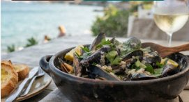
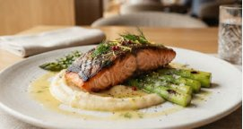
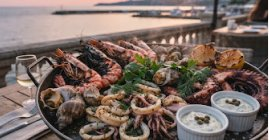
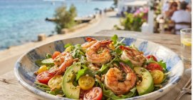
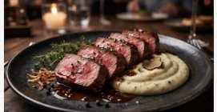
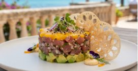
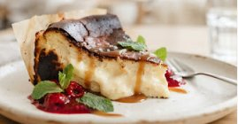
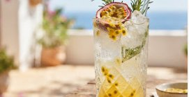

Хіт сезону
Чорноморські мідії у вершково-винному соусі
Свіжі мідії з ранкового улову, біле суху вино, часник, прованські трави та вершковий соус. · 420 г
ЦІНА480 грн Замовити
Європейська та морська кухня на самому березі Чорного моря у Чорноморську. Гармонія локальних делікатесів, сонячного бризу та високої гастрономії.

Свіжі мідії з ранкового улову, біле суху вино, часник, прованські трави та вершковий соус. · 420 г

Філе дикого лосося на грилі, ніжна молода спаржа, авторський соус і цитрусовий акцент. · 350 г

Тигрові креветки, кальмари, соковиті раками, молодий восьминіг із фірмовими соусами. · 850 г

Мікс хрусткого салату ромен та рукола, солодкі томати чері, кедрові горіхи та легкий соус. · 280 г

Витримана яловича вирізка dry-aged, оксамитове картопляне пюре з білим трюфелем. · 320 г

Ніжний жовтоперий тунець sashimi-grade, кубики авокадо, пюре з стиглого манго. · 220 г

Ніжний кремовий запечений чизкейк Сан-Себастьян із карамелізованою скоринкою. · 180 г

Пюре стиглої маракуї, домашній прянийсироп із гілочок розмарину, крижинки. · 400 мл
Ми отримуємо рибу та чорноморські мідії безпосередньо від місцевих рибалок щоранку. Наш шеф створює сезонні страви, підкреслюючи природний смак інгредієнтів витриманими оливковими оліями, свіжими травами та винними соусами.
Особливі побажання щодо алергенів, дитячого меню або дієтичних обмежень можна повідомити офіціанту чи вказати в коментарях при онлайн-бронюванні столика.